国内Scratch教学现状
#1 国内Scratch教学现状 作者：有志青年 发表时间：2013-2-17 14:32:34
内容来自北京景山学校毛澄洁老师的讲稿《国内Scratch教学现状综述》，供老师们参考。
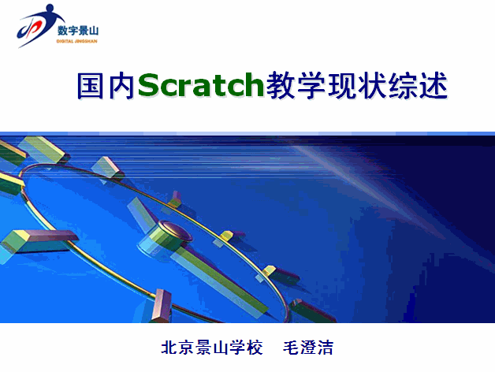
#2 国内Scratch教学现状【香港】 作者：有志青年 发表时间：2013-2-17 14:33:55
2011年香港Scratch Day（第三届）
时间：2011年5月21日
对象：小三年级——初中三年级，共计500名
活动：数码游戏设计、交流共享
网址：http://www.lead.org.hk/scratch/index.html
活动目标：激发学生学习动机（提升学习自信心、趣味性、与满足感）
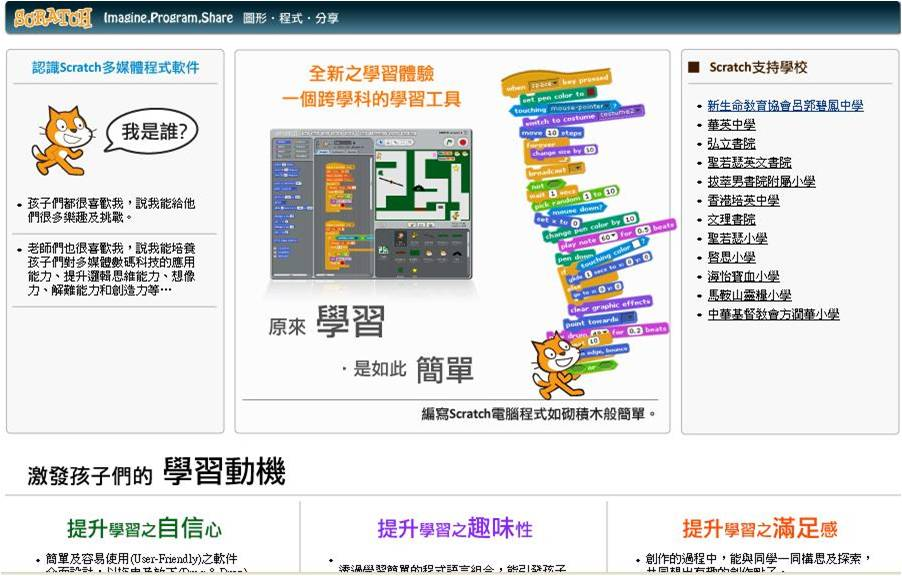#3 国内Scratch教学现状【台湾】 作者：有志青年 发表时间：2013-2-17 14:37:04
在台湾，中小学生的信息化课是以这个软件为主来上的。有许多这样的网站。教育部门每年举行程序设计比赛。通过这个软件，扩展了语文，数学，外语的教学深度。
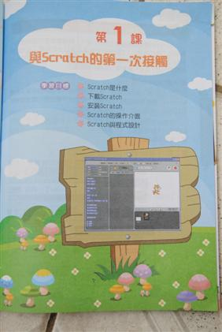
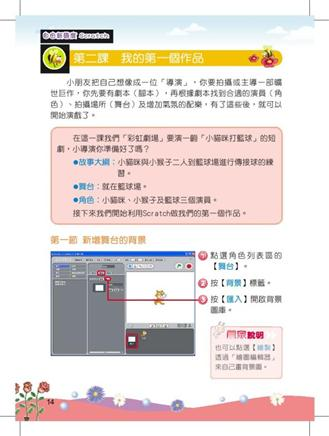#4 英国Scratch教学现状 作者：有志青年 发表时间：2013-2-17 14:38:09
Scratch1（8课）: §移动与声音、重复动作、颜色、设计自己的角色 §说话与思考、图片特效、声音与音乐、制作动画
Scratch2（5单元24课）: §动作与外观、声音与画笔、控制 §侦测和变量、数字和逻辑运算
Scratch3（7单元32课）: §动画、绘画、游戏、互动艺术 §数学、音乐、仿真
#5 国内Scratch教学现状【广州、武汉】 作者：有志青年 发表时间：2013-2-17 14:44:14
儿童数字文化创作课程研究—广州、武汉 王继华 吴向东 华南师范大学附属小学 2010年1月 毛爱萍华中科技大学附属小学 2010年9月
v课程的由来：
v其一，课程的社会责任 §小学信息技术课程是儿童ICT的启蒙教育，健康的网络文化或（称为数字文化）从一开始就要对儿童产生引领。
v其二，课程的技术文化性质 §信息技术课程的目标在是学会电脑操的基础上学习ICT技术文化。 §一是ICT技术带来的外部社会文化效应，借助日益发达的ICT技术，不仅艺术创作可以大规模业余化，智慧分享、协作学习、协作完成任务变得无比快捷简单。儿童借助技术参与该类社会文化生活也成为了可能可及，学生也可以参与到大规模业余化中去创造属于他们自己的东西，甚至还有可能形成属于他们自己的亚文化。 §二是ICT技术本身的技术文化：技术的原理、规则、方法、技巧等。作为技术设计来说，都会遵循一定的规范，让儿童理解这规范进而快速迁移到类似软件的学习中，教学将事半功倍。这是课程的第三个层级来对待，具体的软件操作学习作为最底层来对待。
v其三，课程应来源于数字原住民——儿童，反映儿童的生活，同时让儿童能通过技术去表达自己的思想。
内容结构
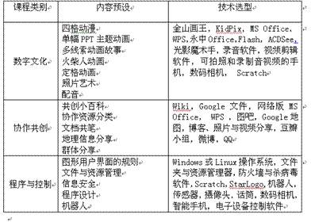
v毛爱萍的校本教材
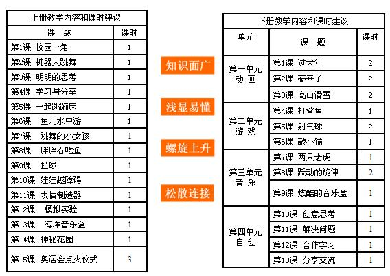
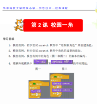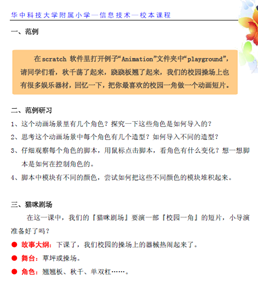
#6 国内Scratch教学现状【常州-趣味编程】 作者：有志青年 发表时间：2013-2-17 14:46:13
学校： 常州市虹景小学 常州市解放路小学常州市实验小学
课题：小学scratch编程语言常见课型的研究
课例：《切换造型》、《小猫走迷宫》、《神秘的巫婆》、《海底世界》、《智能红绿灯教学》
特点：（1）区域学校整体推进（2）同课异构（3）以“命令与方法”为教学目标（4）适度开放#7 国内Scratch教学现状【北京】 作者：有志青年 发表时间：2013-2-17 14:53:27
北京景山学校“十二五”教育科研规划课题 课题负责人：吴俊杰 课题成员：南校区信息技术教研组 即将出版的教材结构：艺术单元：变脸、个人数字画展、秩序与变化声音看起来是什么样子、图画听起来是什么感觉、新编故事研究单元：随机数的研究、计数器、石头剪子布机器与机器的对弈、反应时间的研究、视觉反应时间工程单元：学生游戏展、报警器、点餐、加减法口算生成器校本选修课程：小小数字科学家
南校区：吴俊杰 北校区：毛澄洁、段捷、王波 内容：研究与控制层面的内容，应用计算机本身和外部的传感器设计实验仪器，采集数据，处理分析数据，撰写研究报告。 是北京市“十一五”规划课题：数字科学家计划：基于数据探究的科学选修课程建设#8 国内Scratch教学现状【社会培训】 作者：有志青年 发表时间：2013-2-17 14:56:04
阿尔法营--少儿电脑魔法学校
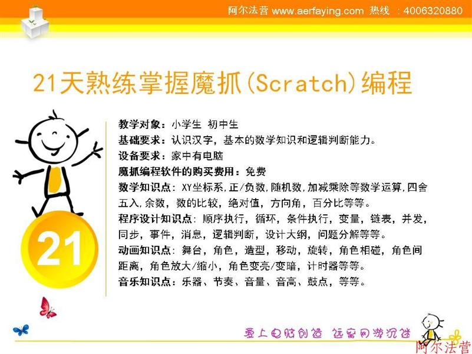
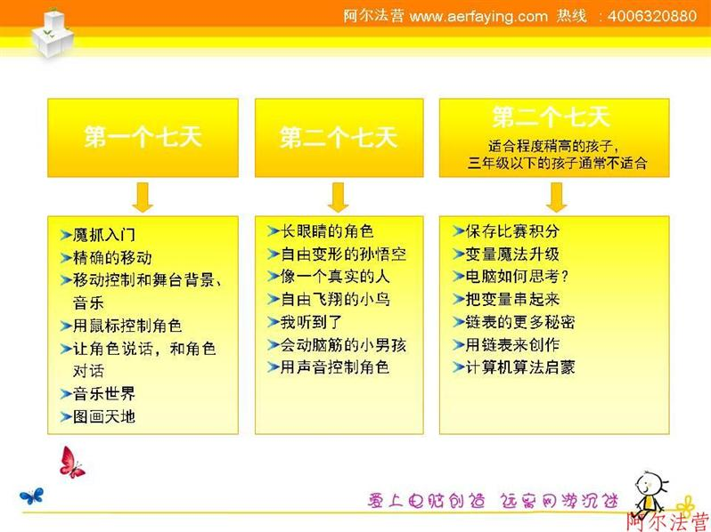
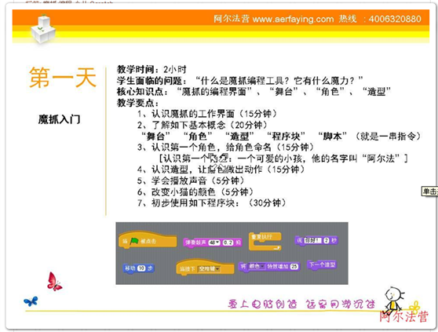